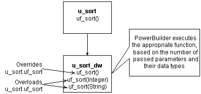
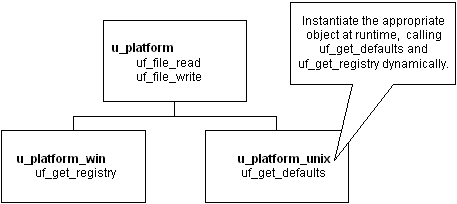
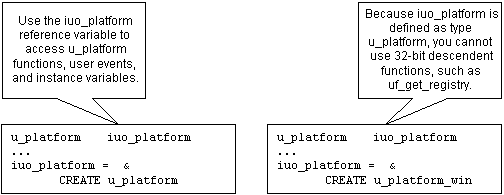
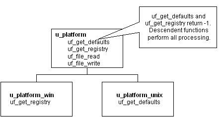

 Global functions Global functions cannot be overloaded.
Global functions Global functions cannot be overloaded.
Dynamic versus static lookup
Dynamic lookup In certain situations, such as when insulating your application from cross-platform dependencies, you create separate descendent objects, each intended for a particular situation. Your application calls the platform-dependent functions dynamically:

Instantiate the appropriate object at runtime, as shown in the following code example:
// This code works with both dynamic and
// static lookup.
// Assume these instance variables
u_platform iuo_platform
Environment ienv_env
...
GetEnvironment(ienv_env)
choose case ienv_env.ostype
case windows!
iuo_platform = CREATE u_platform_win
case windowsnt!
iuo_platform = CREATE u_platform_win
case else
iuo_platform = CREATE u_platform_unix
end choose
Although dynamic lookup provides flexibility, it also slows performance.
Static lookup To ensure fast performance, static lookup is a better option. However, PowerBuilder enables object access using the reference variable's datatype (not the datatype specified in a CREATE statement).

When using static lookup, you must define default implementations for functions in the ancestor. These ancestor functions return an error value (for example, -1) and are overridden in at least one of the descendent objects.

By defining default implementations for functions in the ancestor object, you get platform independence as well as the performance benefit of static lookup.
Using delegation
Delegation occurs when objects offload processing to other objects.
Aggregate relationship In an aggregate relationship (sometimes called a whole-part relationship), an object (called an owner object) associates itself with a service object designed specifically for that object type.
For example, you might create a service object that handles extended row selection in DataWindow objects. In this case, your DataWindow objects contain code in the Clicked event to call the row selection object.
 To use objects in an aggregate relationship:
To use objects in an aggregate relationship:
Create a service object (u_sort_dw in this example).
Create an instance variable (also called a reference variable) in the owner (a DataWindow control in this example):
u_sort_dw iuo_sort
Add code in the owner object to create the service object:
iuo_sort = CREATE u_sort_dw
Add code to the owner's system events or user events to call service object events or functions. This example contains the code you might place in a ue_sort user event in the DataWindow control:
IF IsValid(iuo_sort) THEN
Return iuo_sort.uf_sort()
ELSE
Return -1
END IFAdd code to call the owner object's user events. For example, you might create a CommandButton or Edit>Sort menu item that calls the ue_sort user event on the DataWindow control.
Add code to the owner object's Destructor event to destroy the service object:
IF IsValid(iuo_sort) THEN
DESTROY iuo_sort
END IF
Associative relationship In an associative relationship, an object associates itself with a service to perform a specific type of processing.
For example, you might create a string-handling service that can be enabled by any of your application's objects.
The steps you use to implement objects in an associative relationship are the same as for aggregate relationships.
Using user objects as structures
When you enable a user object's AutoInstantiate property, PowerBuilder instantiates the user object along with the object, event, or function in which it is declared. You can also declare instance variables for a user object. By combining these two capabilities, you create user objects that function as structures. The advantages of creating this type of user object are that you can:
- Create descendent objects and extend them.
- Create functions to access the structure all at once.
- Use access modifiers to limit access to certain instance variables.
 To create a user object to be used as a structure:
To create a user object to be used as a structure:
Create the user object, defining instance variables only.
Enable the user object's AutoInstantiate property by checking AutoInstantiate on the General property page.
Declare the user object as a variable in objects, functions, or events as appropriate.
PowerBuilder creates the user object when the object, event, or function is created and destroys it when the object is destroyed or the event or function ends.
Subclassing DataStores
Many applications use a DataWindow visual user object instead of the standard DataWindow window control. This allows you to standardize error checking and other, application-specific DataWindow behavior. The u_dwstandard DataWindow visual user object found in the tutorial library TUTOR_PB.PBL provides an example of such an object.
Since DataStores function as nonvisual DataWindow controls, many of the same application and consistency requirements apply to DataStores as to DataWindow controls. Consider creating a DataStore standard class user object to implement error checking and application-specific behavior for DataStores.